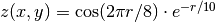
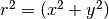

Instead of a mesh plot we may choose to show 3-D surfaces using artificial illumination. For this example we will use grdmath to make a grid file that contains the surface given by the function , where . The illumination is obtained by passing two grid files to grdview: One with the z-values (the surface) and another with intensity values (which should be in the 1 range). We use grdgradient to compute the horizontal gradients in the direction of the artificial light source. The gray.cpt file only has one line that states that all z values should have the gray level 128. Thus, variations in shade are entirely due to variations in gradients, or illuminations. We choose to illuminate from the SW and view the surface from SE:
#!/bin/bash
# GMT EXAMPLE 05
#
# Purpose: Generate grid and show monochrome 3-D perspective
# GMT progs: grdgradient, grdmath, grdview, pstext
# Unix progs: echo, rm
#
ps=example_05.ps
gmt grdmath -R-15/15/-15/15 -I0.3 X Y HYPOT DUP 2 MUL PI MUL 8 DIV COS EXCH NEG 10 DIV \
EXP MUL = sombrero.nc
echo '-5 128 5 128' > gray.cpt
gmt grdgradient sombrero.nc -A225 -Gintensity.nc -Nt0.75
gmt grdview sombrero.nc -JX6i -JZ2i -B5 -Bz0.5 -BSEwnZ -N-1+gwhite -Qs -Iintensity.nc -X1.5i \
-Cgray.cpt -R-15/15/-15/15/-1/1 -K -p120/30 > $ps
echo "4.1 5.5 z(r) = cos (2@~p@~r/8) @~\327@~e@+-r/10@+" | gmt pstext -R0/11/0/8.5 -Jx1i \
-F+f50p,ZapfChancery-MediumItalic+jBC -O >> $ps
rm -f gray.cpt sombrero.nc intensity.nc
The variations in intensity could be made more dramatic by using grdmath to scale the intensity file before running grdview. For very rough data sets one may improve the smoothness of the intensities by passing the output of grdgradient to grdhisteq. The shell-script above will result in a plot like the one in Figure.
3-D illuminated surface.
{kind=link}